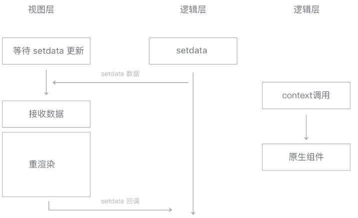

一些原生组件支持使用 context 来更新组件。
不同于setData，使用context来更新组件并不会涉及到重渲染过程，数据通信过程也不同。
在setData的数据通信流程中，
数据从逻辑层经过native层转发，传入视图层的WebView，再经过一系列渲染步骤之后传入组件。
而使用context时，
数据从逻辑层传到native层后，直接传入组件中，这样可以显著降低传输延迟。

图7-9 setData与context对比时序图（上setData，下context）
在具体通信过程上，因为context的方法繁多，通信方式相对于setData更复杂。不过基础库会对context方法调用时的通信进行封装优化，通常开发者不需要关心这个问题。
最后一次编辑于 2019年08月19日 （未经腾讯允许，不得转载）